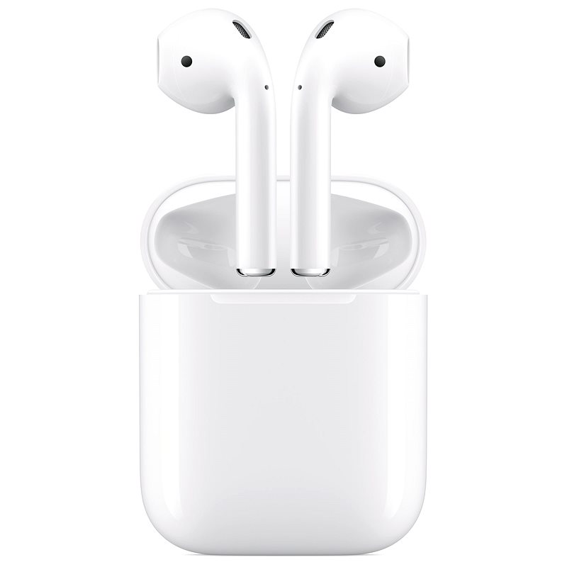
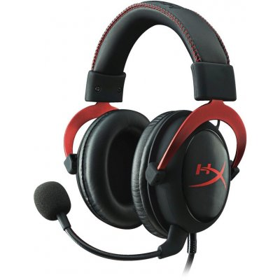

Bezdrôtové slúchadlá s mikrofónom, True Wireless štuple, uzatvorená konštrukcia, Bluetooth 5.0, aktívne potlačenie hluku (ANC), prijímanie hovorov, prepínanie skladieb, hlasový asistent, certifikácia IPX4, výdrž batérie až 24h(4,5h+19,5h)
Výdrž batérie 24h
Bluethoot verzia 5.0
225,90 €
Apple AirPods 2019

Bezdrôtové slúchadlá s mikrofónom, True Wireless kôstky, uzatvorená konštrukcia, Bluetooth 5.0, prijímanie hovorov, prepínanie skladieb, hlasový asistent, výdrž batérie až 24h(5h+19h)
Výdrž batérie 24h
Bluethoot verzia 5.0
135,90 €
HyperX Cloud II Headset červené

Herné slúchadlá káblové, s mikrofónom, na hlavu, okolo uší, uzatvorená konštrukcia, 3.5mm Jack, USB-A, pre PC, PlayStation 4, PlayStation 5, Xbox ONE a Xbox Series, s ovládaním hlasitosti, prijímanie hovorov, prepínanie skladieb, frekvenčný rozsah 15 Hz–25000 Hz, citlivosť 98 dB/mW, impedancia 60 Ohm, menič 53 mm, kábel 1 m
Citlivosť 98 dB/mW
Frekvenčný rozsah 15Hz - 25 000Hz
65,90 €
Xiaomi Mi True Wireless Earbuds Basic 2
Bezdrôtové slúchadlá s mikrofónom, True Wireless štuple, uzatvorená konštrukcia, Bluetooth 5.0, s ovládaním hlasitosti, hlasový asistent, frekvenčný rozsah 20Hz–20000Hz, citlivosť 93 dB/mW, impedancia 160 Ohm, výdrž batérie až 12h(4h+12h)
Výdrž batérie 12h
Citlivosť 93 dB/mW
Frekvenčný rozsah 20Hz - 20 000Hz
Bluethoot verzia 5.0
19,90 €
Niceboy HIVE pods 2
Bezdrôtové slúchadlá s mikrofónom, True Wireless štuple, uzatvorená konštrukcia, Bluetooth 5.0, prijímanie hovorov, prepínanie skladieb, certifikácia IPX5, frekvenčný rozsah 20Hz–15000Hz, citlivosť 94 dB/mW, výdrž batérie až 35h(7h+28h)